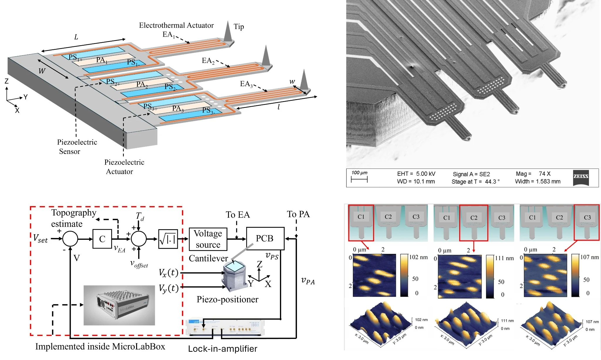

Parallel Active Microcantilevers
Three independently actuated and self-sensed probes demonstrated a threefold increase in effective imaging throughput.
View projectDr. Vikrant Kumar Singh publishes under the name K. S. Vikrant. The publications span precision positioning, levitation, electromagnetic actuation, MEMS force sensing, AFM, and automated instrumentation.

Three independently actuated and self-sensed probes demonstrated a threefold increase in effective imaging throughput.
View project
A self-stabilizing acoustic–electromagnetic platform achieved nanometre-class resolution along three axes.
View project
Compact dual-sided stages achieved large-range six-degree-of-freedom motion and nanometre positioning precision.
View projectH. M. Nasrabadi, K. S. Vikrant, and S. O. Reza Moheimani. IEEE/ASME Transactions on Mechatronics, accepted; final pagination pending.
K. S. Vikrant, P. Biswas, and S. O. Reza Moheimani. Sensors and Actuators A: Physical, 394, 116894.
K. S. Vikrant, D. Dadkhah, and S. O. Reza Moheimani. IEEE Transactions on Magnetics, 60(9), 8000610.
H. M. Nasrabadi, N. Nikooienejad, K. S. Vikrant, and S. O. Reza Moheimani. Mechatronics, 99, 103165.
K. S. Vikrant and G. R. Jayanth. Nature Communications, 13, 3334.
K. S. Vikrant, K. Hithiksha, and G. R. Jayanth. IEEE/ASME Transactions on Mechatronics, 26(2), 798–806.
K. S. Vikrant and G. R. Jayanth. Ultramicroscopy, 196, 136–141.
Prosanto Biswas* and K. S. Vikrant* and S. O. Reza Moheimani, IEEE/ASME AIM, Genova, Italy. *Equal contribution.
K. S. Vikrant, D. Dadkhah, and S. O. Reza Moheimani, ANZCC, Gold Coast, Australia.
K. S. Vikrant, H. M. Nasrabadi, and S. O. Reza Moheimani, MARSS, Abu Dhabi, UAE.
H. M. Nasrabadi, N. Nikooienejad, K. S. Vikrant, and S. O. Reza Moheimani, IEEE/ASME AIM, Seattle, USA.
K. S. Vikrant and G. R. Jayanth, iNaCoMM, Jabalpur, India. Best Paper Award.
G. R. Jayanth and K. S. Vikrant, Indian Patent.
G. R. Jayanth, R. S. M. Mrinalini, and K. S. Vikrant, Indian Patent.